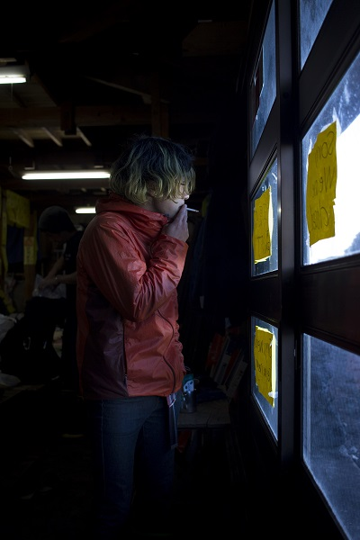
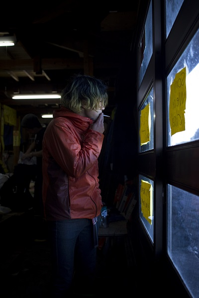
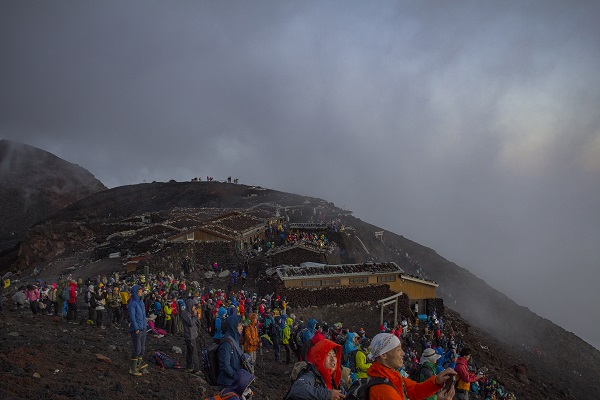
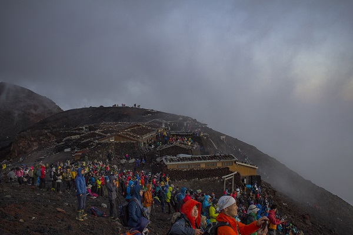
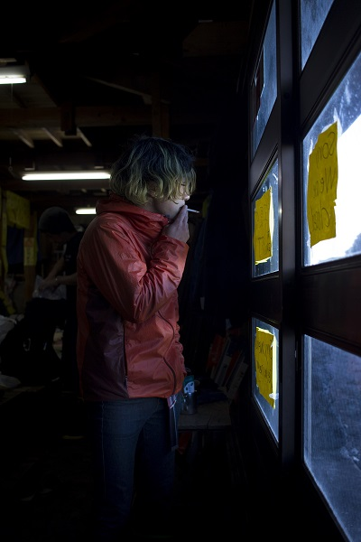
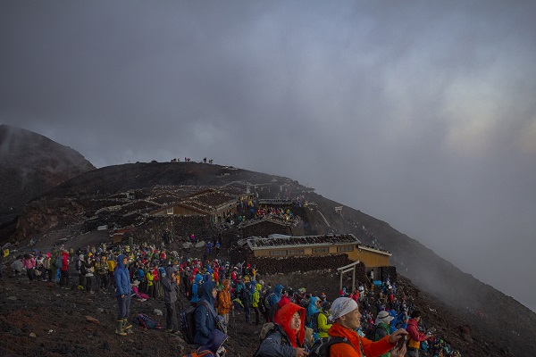

 



"Don't just capture the moment; Tell me a story"



There was an undeniable sense of panic and awe as this cumulonimbus cloud erupted over Western Tokyo before sunset. The handful of people left on the summit, mostly hut staff, quickly ran to grab their cameras and sketchpads, eager to capture the rare spectacle.
Jin emerged silently out of the kitchen, wandering over to the observation deck while pulling out a cigarette and lighter. She sat, almost perfectly still, staring into the cloud, as she gently blew her smoke into its morphing crown, grateful for the escape these next two months would be
Within minutes of recieving a typhoon warning on August 22nd, the windows and walls were boarded up. We tied down the water tanks, and switched our generators to run on their lowest mode. This typhoon wasn't forecasted to pass directly over us, but better be safe than sorry.
Huddled around the one remaining bucket of burning coal, Shizu-san slowly raised his head, cracked his back, and said "Saa, shall we?", signalling the start of a decades long tradition of playing Mahjong to pass time, as the typhoon rattled the corrugated steel roof panels above our heads
As the climbers outside celebrated reaching the summit in time for sunrise, Shin-sensei let out another deep breath. After a grueling 16-hour workday, he managed to pushed aside the cardboard boxes and plastic bags scattered across the bench, giving himself just enough space to unfold his futon before passing out
We were two days away from closing up the hut for the season. There was still a mountain of work to be done before we could bolt up our doors and head down, but for now, we could rest. The climbers outside would have to get their bowl of steaming ramen somewhere else. Shin-sensei wasn't getting up any time soon
The summit, buzzing with nervous energy a mere minute ago, had gone silent. Waves of neon windbreakers turned east, as the fog cleared, revealing the first rays of light that had cracked above the horizon.
An older man lowered his camera, and looked around at the hundreds of people from around the world that had come to share this moment with him. He raised his hands in the air, and yelled
"Banzai!"
"Banzai!"
"Banzai~!"
and the crowd erupted into celebration
The phone rang at 3:13am, informing us that a 28-person tour from Taishikan would be arriving at the summit within the hour. Shachō rolled out of his futon, and yelled through his window that we had 20 minutes to get the hut up and running for the day. Sundays were always busy, but I could sense this morning would be something esle.
I threw on my sweatpants and grabbed my camera as I hastily stumbled out of the hut to see what we were up against for the day. Thousands of headlamps silently slithered there way up an invisible mountain, as the yellow hue of Tokyo gently lit the sky all the way into the horizon
Pls write something :(
Pls write something :(
She never onced raised her head, or drew her attention away from the work at hand. Passersby ice creams and electric fans did not tempt her, or the dozen other garden workers tasked with upholding the impecable beauty of the gardens surrounding Kōdaiji-dera.
Pls write something :(
He knelt by the burning bucket of coal, chopsticks in hand, carefully turning the fillets over onto their skin to crisp. Overwhelmed by the aroma of salmon fat dripping on the red hot binchōtan, it took every bit of self-control to resist the temptation to sneak a quick bite.
Or continue grilling over an oil bucket, your choice.
Pls write something :(

Pls write something :(

Pls write something :(

Pls write something :(